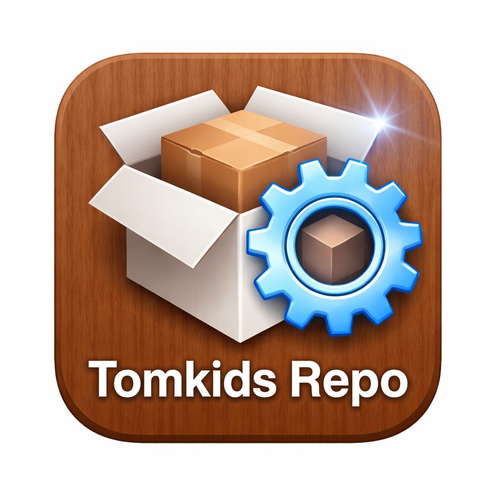

Cài chứng chỉ dưới đây để thêm được các nguồn vào Cydia.
Cài Chứng Chỉ cho iOS CổChỉ dành cho iPhone 4S / iOS 6 đã Jailbreak
Chỉ cần 2 bước, Cydia sẽ tự động tải và cài tất cả các tweaks cần thiết!
Thêm nguồn vào Cydia (nếu chưa có)
Them nguon vao CydiaMở Cydia và cài toàn bộ các tweaks
Cài Meta Bundle (Cydia)* Cydia sẽ tự động tính toán và tải về 50+ tweaks cần thiết.
Lưu ý: máy cần phải jailbreak, đã cài Apple File Conduit 2, AppSync Unified.
Tomkids Repo is a repository dedicated to preserving classic jailbreak tweaks, utilities, applications and system packages for legacy iOS devices.
The packages are collected from various sources and built from IPA files.
Repository URL:
https://tomkidsrepo.cloud/